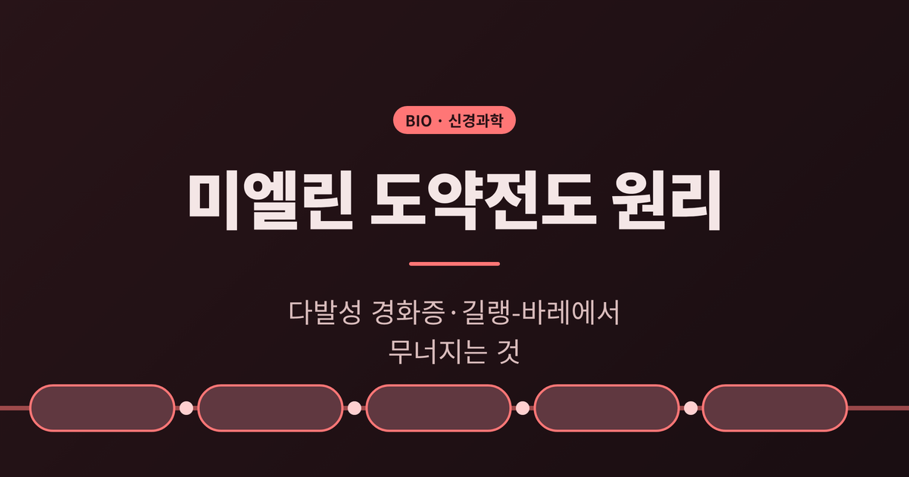
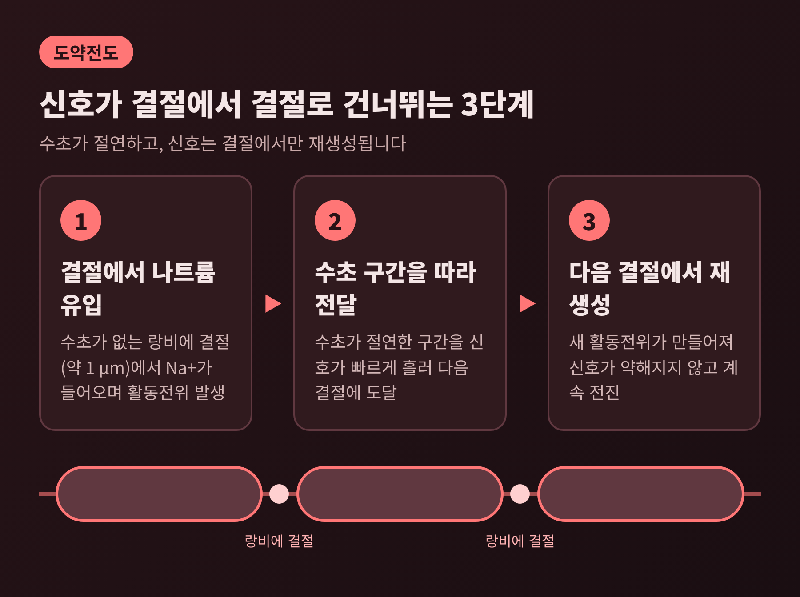
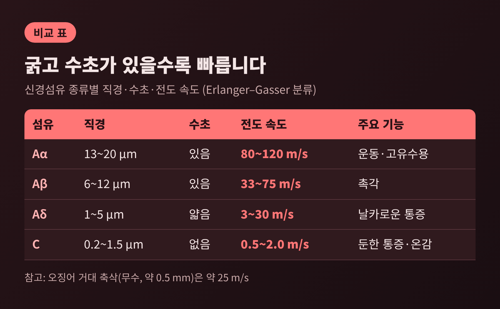
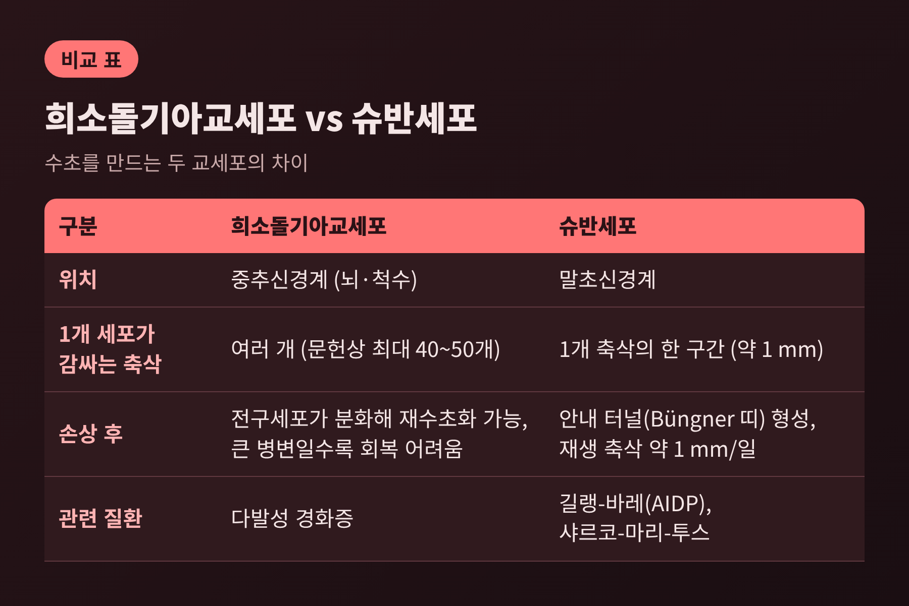
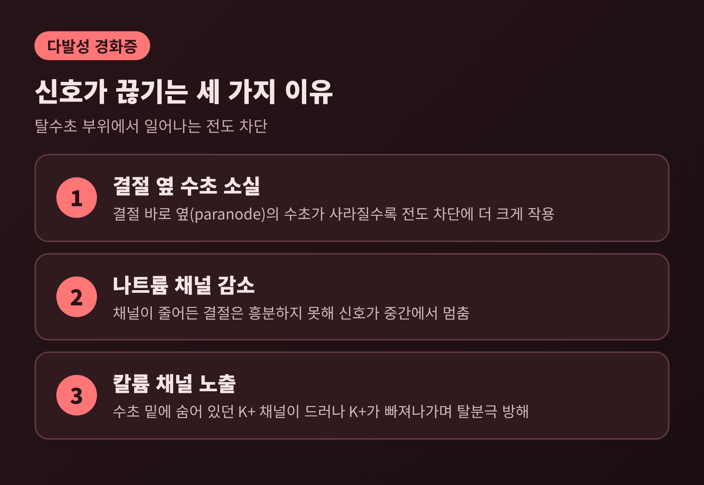
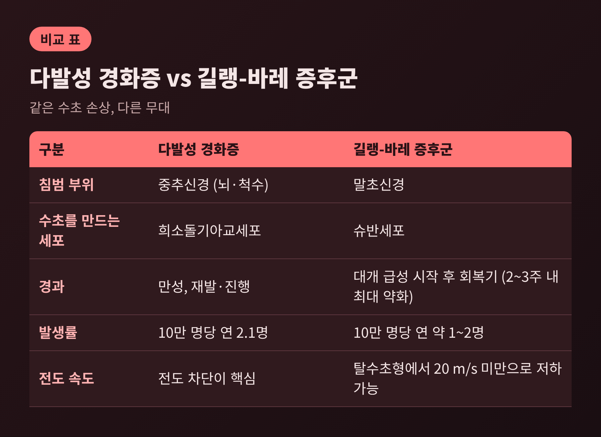

오늘은 미엘린(수초)이 신경 신호를 빠르게 만드는 원리와, 그 수초가 무너질 때 생기는 일을 정리해 보려 합니다.
핵심은 이렇습니다. 수초는 축삭을 절연하고, 신호는 수초가 끊긴 랑비에 결절에서만 새로 만들어져 다음 결절로 건너갑니다. 이 구조가 중추신경에서는 다발성 경화증, 말초신경에서는 길랭-바레 증후군으로 무너질 수 있습니다.
이 글은 일반 교양 수준의 설명이며, 진단이나 치료를 권하는 글이 아닙니다.
신경 신호인 활동전위는 수초로 덮이지 않은 랑비에 결절에서만 재생성됩니다. 결절 사이의 구간은 수초가 절연합니다.
결절에 나트륨이 들어오면 축삭 안쪽의 이온이 밀리고, 그 힘이 다음 결절까지 전해져 새 활동전위를 일으킵니다.
신호가 뛰어넘는 것처럼 보여서 '도약'이라는 이름이 붙었습니다. 라틴어 saltare, 곧 '뛰다'에서 온 말입니다. 실제로는 수초 구간을 빠르게 흘러가는 것입니다.
결절은 아주 작은 곳입니다. 길이가 약 1 µm이고, 전압의존성 나트륨 채널이 빽빽이 모여 있습니다. 결절의 나트륨 채널 농도가 결절 사이 구간의 약 25배라는 보고가 있습니다.

에너지 면에서도 이득이 있습니다. 활동전위가 결절에서만 일어나니, 매번 되돌려 펌핑해야 하는 나트륨·칼륨 이온이 적습니다.
예전엔 가설이었지만, 지금은 확립된 설명입니다. 1925년 릴리(Lillie)가 절연 구간을 둔 철사 모형에서 아이디어를 얻어 제안했고, 1939년 다사키 이치지(Tasaki)가 두꺼비 신경섬유에서 확인했습니다. 1949년 헉슬리와 슈템플리가 개구리 말초 신경섬유에서, 1952년 프랑켄호이저가 해부하지 않은 신경에서 거듭 확인하며 논쟁이 정리되었습니다.
속도를 정하는 요인은 크게 두 가지, 축삭의 굵기와 수초 유무입니다.
축삭이 굵을수록 내부 저항이 줄어 전도가 빨라집니다. 오징어가 거대 축삭을 갖게 된 이유로 추정되는 대목입니다.
오징어 거대 축삭은 지름이 약 0.5 mm이고 수초가 없습니다. 속도는 약 25 m/s입니다.
반면 척추동물의 수초 축삭은 훨씬 가는데도 최대 100~120 m/s 안팎에 이릅니다. 교과서에는 유수 축삭이 최대 약 150 m/s라는 서술도 있습니다. 무수 축삭은 대체로 0.5~10 m/s입니다.
사람 신경섬유를 분류하면 차이가 선명합니다.

가장 굵은 Aα 섬유는 직경 13~20 µm에 수초가 있고, 80~120 m/s로 달립니다. 운동신경과 근육의 위치 감각을 전하는 섬유가 여기에 속합니다.
급성 통증을 전하는 Aδ 섬유는 1~5 µm에 수초가 얇아 3~30 m/s입니다. 수초가 없는 C 섬유는 0.2~1.5 µm에 0.5~2.0 m/s에 그칩니다.
가장 빠른 섬유와 가장 느린 섬유의 차이는 수십 배에서 수백 배에 이릅니다. 수초의 유무와 굵기가 곧 속도의 등급을 정하는 셈입니다.
병원에서 실제로 재는 말초신경의 전도 속도는 이보다 낮은 범위입니다. 대부분 50~60 m/s이고, 다리 신경은 약 40~45 m/s, 팔 신경은 약 50~65 m/s입니다. 체온이 낮으면 느려지고 나이에 따라서도 달라집니다.
결절 길이도 속도에 영향을 줍니다. 2017년 eLife 연구에 따르면 시신경 결절은 약 0.5~2.2 µm로 길이가 제각각이었습니다. 이 길이 차이만으로 전도 속도가 약 20% 달라질 수 있다고 추정했는데, 수초 한 겹을 더하거나 빼는 것과 비슷한 효과입니다.
수초는 신경이 스스로 만드는 것이 아니라 곁의 교세포가 감싸서 만듭니다. 중추신경(뇌·척수)에서는 희소돌기아교세포가, 말초신경에서는 슈반세포가 맡습니다.

가장 큰 차이는 한 세포가 몇 개의 축삭을 담당하느냐입니다.
손상 뒤의 대응도 다릅니다.
슈반세포는 손상된 축삭의 잔해를 치우고, 재생하는 축삭이 지나갈 안내 터널(Büngner 띠)을 만듭니다. 재생 축삭은 좋은 조건에서 하루 약 1 mm씩 자랍니다.
중추신경에서는 희소돌기아교세포 전구세포가 분화해 새 수초를 만들 수 있습니다. 다만 병변이 클수록 기능이 회복될 가능성은 낮아진다고 보고됩니다.
희소돌기아교세포는 절연만 하지 않습니다. 신경영양인자를 분비하고, 축삭에 대사 물질을 공급할 수 있다는 가설도 있습니다.
다발성 경화증(MS)은 면역계가 뇌와 척수의 수초를 공격하는 만성 질환입니다. 증상은 보통 20~40세에 시작되고, 대부분 정상에 가까운 수명을 가집니다.
전 세계 환자는 약 290만 명으로 추산되며, 연간 발생률은 10만 명당 2.1명입니다. 약 5분마다 한 명이 진단받는 셈입니다.
수초가 벗겨지면 무엇이 달라질까요. 핵심 용어는 전도 차단입니다.

탈수초 부위에서는 신호가 멈추고, 양옆의 정상 구간은 그대로 전도합니다. 차단 여부는 벗겨진 면적과 정도, 그리고 시간에 따라 달라집니다. 특히 결절 바로 옆 수초의 소실이 더 크게 작용합니다.
나트륨 채널이 줄면 결절이 흥분하지 못합니다. 정상에서는 수초 아래 숨어 있던 칼륨 채널이 드러나 칼륨이 빠져나가면, 충분한 탈분극이 일어나지 않습니다.
MS의 증상이 시력 문제, 근력 약화, 저림, 균형 문제처럼 병변 위치에 따라 제각각인 것도 이 때문입니다. 흉터 병변(플라크)은 MRI에 보이며, 핀 머리만 한 것부터 골프공 크기까지 다양합니다. 열이 나거나 감염이 생기면 증상이 나빠질 수 있습니다.
일반적으로 완치법은 아직 없습니다. 재발의 횟수와 중증도를 줄이고 진행을 늦추는 질병조절치료가 있고, 재발형에서 더 효과적이라고 알려져 있습니다. 구체적인 치료는 반드시 전문의와 상의하셔야 합니다.
길랭-바레 증후군(GBS)은 면역계가 말초신경을 공격하는 드문 질환입니다. 전염되거나 유전되지는 않습니다. 호흡기나 위장관 감염 후 수일에서 수주 뒤에 시작되는 경우가 많고, 캄필로박터균이 흔한 위험 요인으로 꼽힙니다.
연간 발생률은 10만 명당 약 1~2명입니다.
가장 흔한 유형은 AIDP, 곧 수초를 공격하는 탈수초형입니다. 유럽과 미국에서는 전체의 약 60~80%입니다. 감염 균에 대한 항체가 신경의 강글리오사이드와 교차 반응하는 '분자 모방'이 원인으로 제시됩니다. 이 경우 T림프구와 대식세포가 수초를 손상시킵니다.
수초 대신 축삭을 직접 공격하는 AMAN·AMSAN 유형도 있습니다. 아시아와 중남미에서는 AMAN이 30~65%로 더 흔하다고 보고됩니다.
전도 속도로 보면 변화가 뚜렷합니다. 정상 말초신경이 50~60 m/s 안팎인데, 탈수초형에서는 20 m/s 아래로 떨어질 수도 있습니다.
증상은 보통 발에서 시작되는 근력 약화와 저림으로 나타나 다리, 팔, 얼굴, 호흡근으로 번질 수 있습니다. 대부분 2주 안에, 늦어도 3주째에는 약 90%가 가장 약한 상태에 이릅니다. 영국 NHS는 보통 2~4주에 걸쳐 나빠진다고 설명합니다.
그래서 증상이 의심되면 지체하지 말고 의료기관을 찾아야 하는 질환으로 안내됩니다. 면역글로불린 정맥주사나 혈장교환 같은 치료가 알려져 있으며, 호흡 관리를 위해 중환자실 치료가 필요한 경우도 있습니다.
다행히 대부분은 회복합니다. 몇 주에서 몇 년이 걸릴 수 있고, 약 3분의 1은 약간의 영구적인 근력 저하가 남는다는 보고가 있습니다.

두 질환을 나란히 놓으면 이렇습니다. MS는 중추신경, 희소돌기아교세포, 만성 재발과 진행이 특징입니다. GBS는 말초신경, 슈반세포, 대개 급성으로 시작해 회복기를 거칩니다.
말초에서 회복이 상대적으로 잘 되는 것이 슈반세포의 재생 유도 능력 때문인지는, 이번에 확인한 자료로는 단정하기 어렵습니다.
정리하면 이렇습니다.
수초는 신경을 빠르게 하는 장치이면서, 동시에 가장 약한 고리이기도 합니다. 절연이 사라지면 결절에서 결절로 건너뛰던 신호가 중간에서 멈춥니다.
속도는 수초에서 나오고, 질환은 수초에서 시작됩니다.
이 글에 담은 내용은 교양 차원의 설명이며, 증상이 있다면 반드시 의료진의 진단을 받으셔야 합니다. 저는 신경 하나를 감싼 얇은 막이 몸 전체의 속도를 정한다는 사실이, 읽을수록 놀랍다고 생각합니다. 다음에 손끝의 감각이나 걸음걸이를 의식하게 되신다면, 그 아래에서 일하는 수초를 한 번쯤 떠올려 보셨으면 합니다.